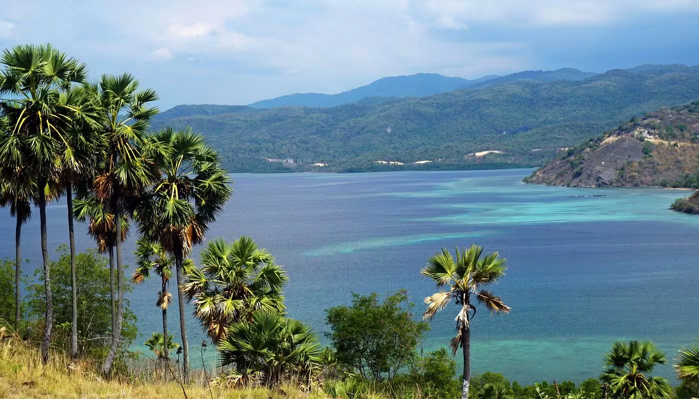
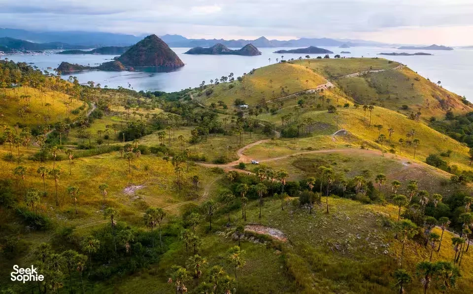
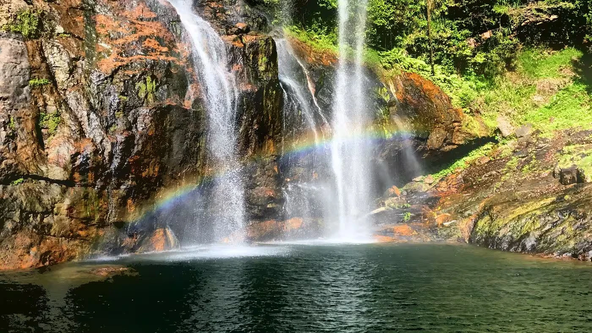
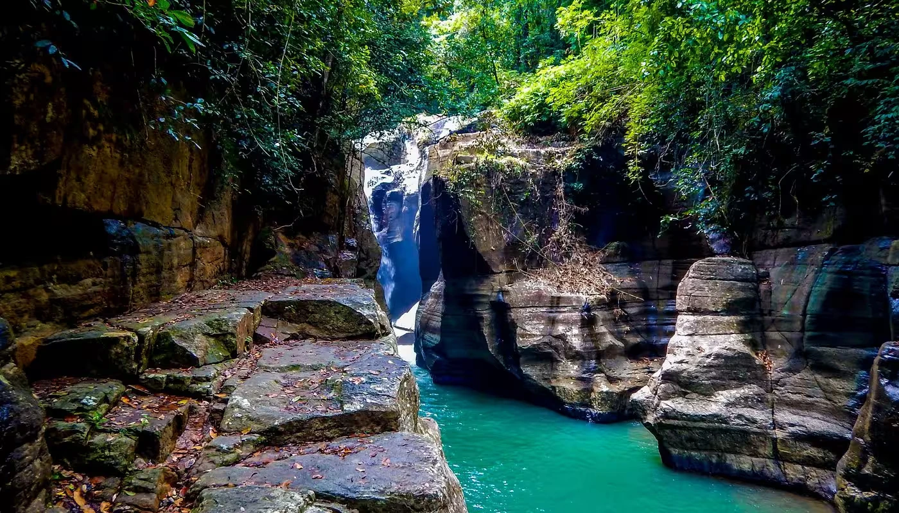
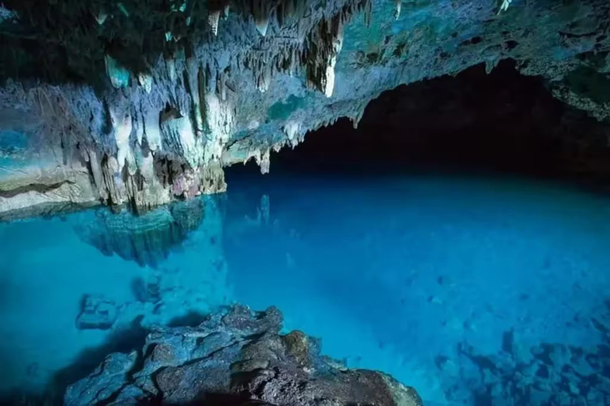
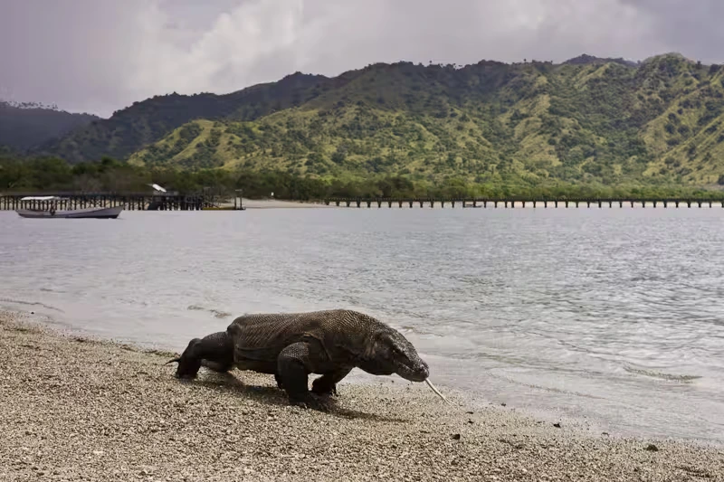
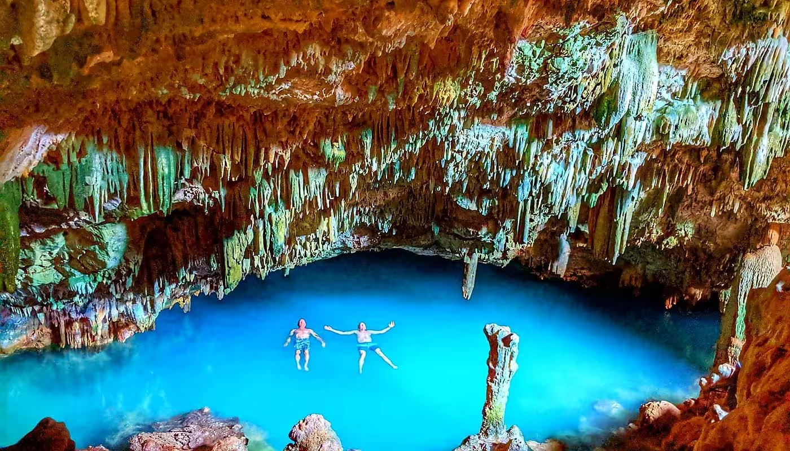
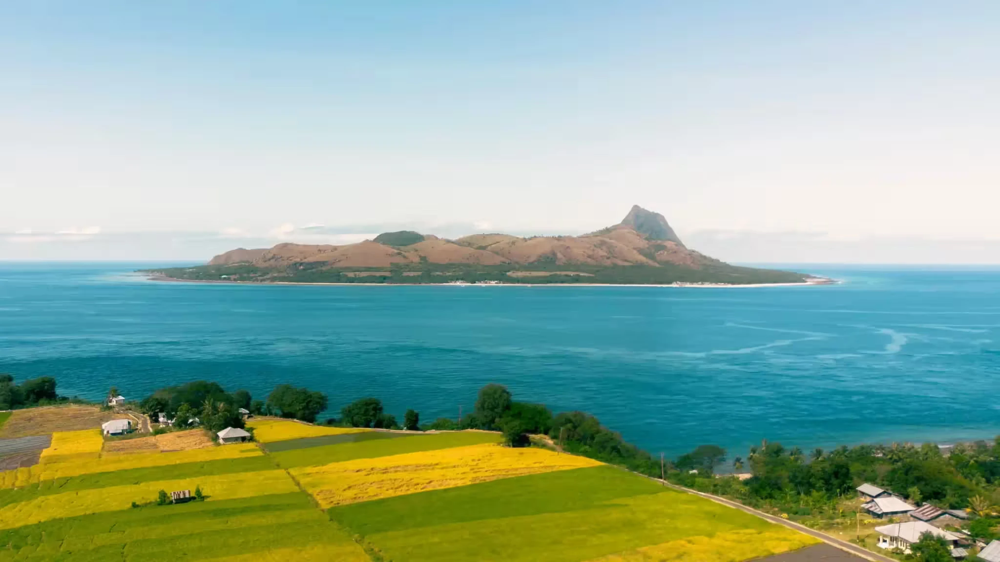
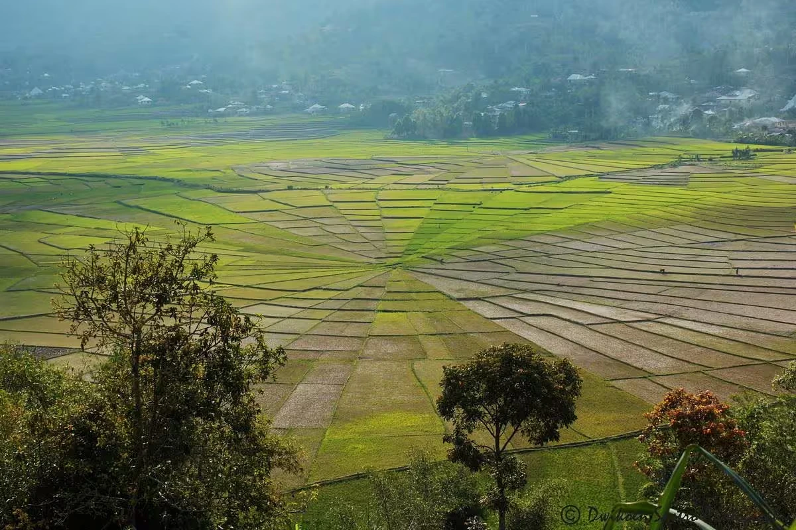

Nikmati koleksi visual menakjubkan dari Labuan Bajo — mulai dari pulau-pulau eksotis, pantai berpasir merah muda, laut biru kristal, hingga matahari terbenam yang memukau. Setiap gambar menyimpan kisah petualangan yang tak terlupakan.

Klik Untuk Lihat Info
Situs Warisan Dunia UNESCO sekaligus rumah bagi komodo — kadal terbesar yang masih hidup di muka bumi. Membentang di Pulau Komodo, Pulau Rinca, dan Pulau Padar, taman nasional ini menawarkan lebih dari sekadar perjumpaan dengan sang naga. Bayangkan: matahari terbenam di atas Pulau Padar, pantai berpasir merah muda, dan keanekaragaman hayati laut yang termasuk terkaya di dunia. Hanya bisa dicapai dengan kapal — dan sepadan dengan setiap ombaknya.

Klik Untuk Lihat Info
Tersembunyi di balik jalur hutan di pesisir Flores, Goa Rangko menyimpan laguna air asin alami di dalam ceruk-ceruk batunya. Cahaya matahari menerobos celah gua, memantulkan kilau keemasan di atas air yang begitu jernih hingga tampak tak nyata. Bawa perlengkapan snorkel — dunia bawah lautnya tak kalah memukau. Dapat dicapai dengan perahu sekitar 30 menit dari Labuan Bajo.

Klik Untuk Lihat Info
Hanya 5 km dari pelabuhan, Goa Batu Cermin adalah gua penuh keajaiban purba. Dulunya terendam di bawah laut, dinding-dindingnya kini tertanam fosil karang, jejak penyu, dan bentuk-bentuk ikan — museum alam ciptaan waktu. Saat sinar matahari menembus lubang gua, dinding kristalnya berkilauan bagai seribu cermin. Kunjungi antara pukul 08.00–10.00 pagi untuk menyaksikan cahaya di saat paling dramatis.

Klik Untuk Lihat Info
Pelarian sempurna ke pedalaman Flores yang rimbun. Air Terjun Cunca Rami berdiri anggun di tengah hutan belantara dekat Desa Golo Ndaring, murni dan tak terjamah. Kolam alami di bawahnya mengundang siapa saja untuk berenang di air mata air yang segar, dikelilingi pepohonan tinggi dan keheningan yang menyembuhkan. Jalur trekking singkat mengantarkan Anda ke sana — menyegarkan jiwa, jauh dari keramaian.

Klik Untuk Lihat Info
Air terjun dua tingkat yang terjun deras ke kolam-kolam alami sebening kaca. Cunca Wulang bersemayam jauh di dalam hutan Flores, sekitar 2 jam dari Labuan Bajo. Perjalanannya sendiri adalah petualangan: trekking menantang menembus hutan tropis yang lebat, membuat setiap langkah terasa bermakna. Salah satu sudut alam paling tenang dan belum terjamah di seluruh Flores Barat.

Klik Untuk Lihat Info
Panggung terbaik untuk menyaksikan matahari terbenam di Labuan Bajo. Berdiri di tepi kota, Bukit Sylvia menyuguhkan panorama Laut Flores yang terbentang luas, gugusan pulau-pulau kecil, dan perahu-perahu kayu yang berayun tenang di lautan. Saat matahari mulai turun, langit berubah menjadi kanvas warna jingga, emas, dan ungu yang membakar. Tiket masuk gratis. Hanya 10–15 menit dari pusat kota. Murni ajaib.

Klik Untuk Lihat Info
Bukit yang tenang hanya 10 menit dari pusat kota, Bukit Cinta memanjakan pengunjung dengan pemandangan laut biru toska dan gugusan pulau-pulau hijau yang tersebar indah. Disukai pasangan dan fotografer, bukit ini memancarkan energi yang damai dan romantis, membuat setiap kunjungan terasa begitu personal. Trekking singkat ke puncak — dan pemandangannya berbicara sendiri.

Klik Untuk Lihat Info
Salah satu lanskap paling memukau di Flores — sawah terasering di Desa Cancar yang terbagi dalam pola jaring laba-laba yang sempurna, mengikuti tradisi pembagian tanah kuno Manggarai yang disebut lodok. Dilihat dari ketinggian, petak-petak sawah geometris itu beriak dalam nuansa hijau tua yang dalam — karya seni hidup hasil tangan generasi para petani. Berjarak 1,5 jam dari Labuan Bajo. Wajib dikunjungi oleh pecinta fotografi dan budaya.

Klik Untuk Lihat Info
Permata tersembunyi Labuan Bajo yang sedang naik daun. Dikenal warga setempat sebagai Pulau Mules, Nuca Molas masih liar, terpencil, dan menyegarkan karena belum tersentuh pariwisata massal. Danau air tawar yang tenang, garis pantai yang damai, dan kehangatan komunitas lokal menjadikan pulau ini terasa seperti rahasia yang hanya ditemukan oleh segelintir pelancong beruntung. Datanglah sebelum dunia tahu.